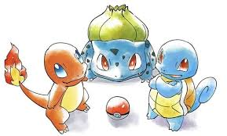
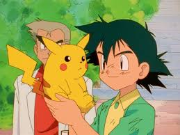

One of the most memorable groups of pokemon from any generation are its first partner pokemon or starter pokemon as their more commonly refered to as. For generation one the starters were Bulbasaur, Charmander, and Squirtle their pokemon national dex numbers being 1, 4, and 6 respectively. Starter pokemon are the first pokemon a player gets when their playing a pokemon game and will often stay on a players team the entire playthrough hence why their so memorable.
Pikachu is the mascot of pokemon making it not only one of the most memorable pokemon of generation, but of all of pokemon. The most well known Pikachu being that of the former pokemon anime protagonist, Ash Ketchum. This pikachu was the first pokemon Ash ever recieved in the anime and was there for all 25 years he was the main protagonist of the anime.
